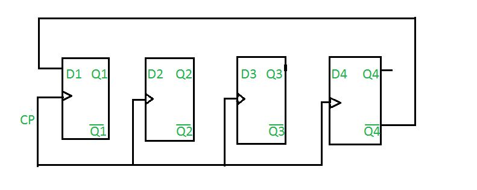
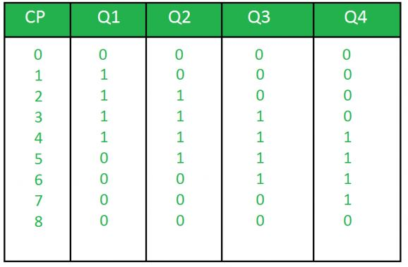

Prerequisite – Counters
Johnson counter also known as creeping counter, is an example of synchronous counter. In Johnson counter, the complemented output of last flip flop is connected to input of first flip flop and to implement n-bit Johnson counter we require n flip-flop.It is one of the most important type of shift register counter. It is formed by the feedback of the output to its own input.Johnson counter is a ring with an inversion.Another name of Johnson counter are:creeping counter, twisted ring counter, walking counter, mobile counter and switch tail counter.
Total number of used and unused states in n-bit Johnson counter:
number of used states=2n
number of unused states=2n – 2*n
Example:
If n=4
4-bit Johnson counter
Initially, suppose all flip-flops are reset.

Truth Table:

where,
CP is clock pulse and
Q1, Q2, Q3, Q4 are the states.
Question: Determine the total number of used and unused states in 4-bit Johnson counter.
Answer: Total number of used states= 2*n
= 2*4
= 8
Total number of unused states= 2n – 2*n
= 24-2*4
= 8
Everything has some advantages and disadvantages.
Advantages of Johnson counter:
- The Johnson counter has same number of flip flop but it can count twice the number of states the ring counter can count.
- It can be implemented using D and JK flip flop.
- Johnson ring counter is used to count the data in a continuous loop.
- Johnson counter is a self-decoding circuit.
Disadvantages of Johnson counter:
- Johnson counter doesn’t count in a binary sequence.
- In Johnson counter more number of states remain unutilized than the number of states being utilized.
- The number of flip flops needed is one half the number of timing signals.
- It can be constructed for any number of timing sequence.
Applications of Johnson counter:
- Johnson counter is used as a synchronous decade counter or divider circuit.
- It is used in hardware logic design to create complicated Finite states machine. ex: ASIC and FPGA design.
- The 3 stage Johnson counter is used as a 3 phase square wave generator which produces 1200 phase shift.
- It is used to divide the frequency of the clock signal by varrying their feedback.